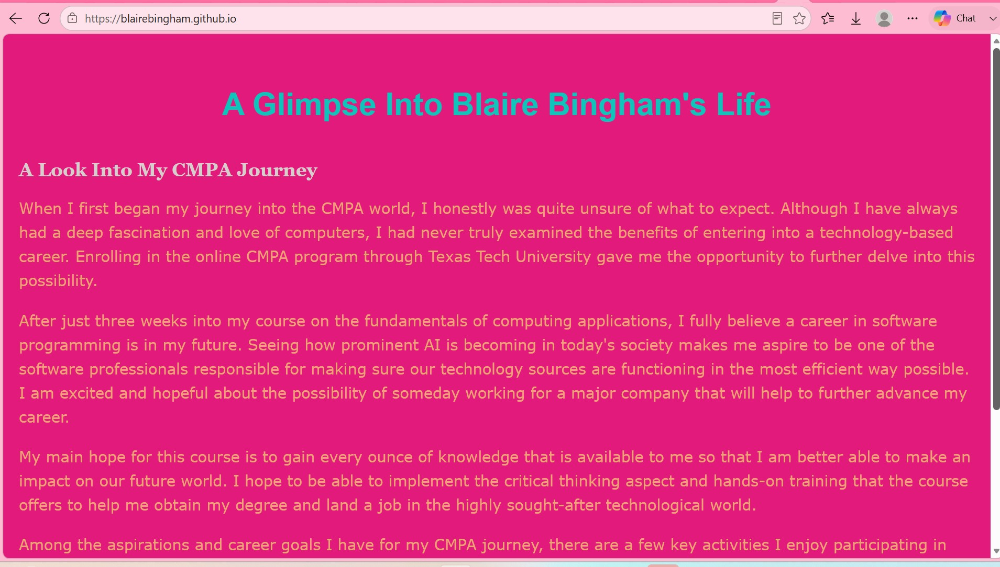
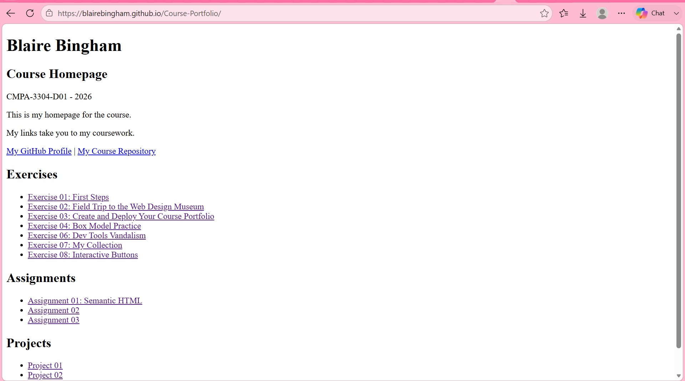

About Me
Hello! My name is Blaire Bingham and I am a full-time Texas Tech student pursuing a bachelor's degree in Computing Applications with a minor in Business! I am also a cosmetologist & have owned and operated my own lash business for the last 10 years! I am a passionate creator, developer, and entrepreneur with a deep appreciation for precision and client satisfaction. As a business owner, I approach every project with a craftsperson's mindset—focusing on the fine details, aesthetic harmony, and seamless experiences. Whether designing digital assets or managing client relationships, I thrive on continuous growth, building meaningful connections, and pursuing a balanced, active lifestyle.
Skills & Interests
Frontend Development
Writing clean, semantic HTML and styled CSS to build responsive layouts, using VS Code as my primary development environment.
Version Control & Git
Managing repositories, tracking file history, and deploying structural web assets efficiently through
Lash Artistry & Business
Experienced beauty business owner skilled in advanced application techniques, client care, inventory logistics, and brand management.
Client Relations
Building long-term relationships, maintaining trust, and mastering high service standards to ensure a high-end experience.
Travel
Traveling & exploring new places is a passion of mine, and I am always ready to plan the next adventure!
Fitness & Wellness
I am highly dedicated to following a structured weight training regimen and active lifestyle to maintain focus and discipline and maintain overall health! I enjoy cycling, hiking, and almost any outdoor activity that allows me to stay active and enjoy the outdoors!
Golfing
Golf is something that has been a part of mine & my families lives for as long as I can remember! It requires practice, focus, and calm execution and is a fun way to enjoy some friendly competition with family and friends! I enjoy playing as often as I can, and I am always looking for new courses to explore!
My Projects

Personal Introduction Webpage
A simple yet elegant personal introduction webpage built with HTML and CSS to showcase my background, skills, and interests.

Coffee Shop Website Prototype
A responsive website prototype for a fictional local coffee shop, showcasing menu items, location information, and the company's story.

Course Portfolio Project
A comprehensive portfolio project showcasing my completed projects for a specific course.